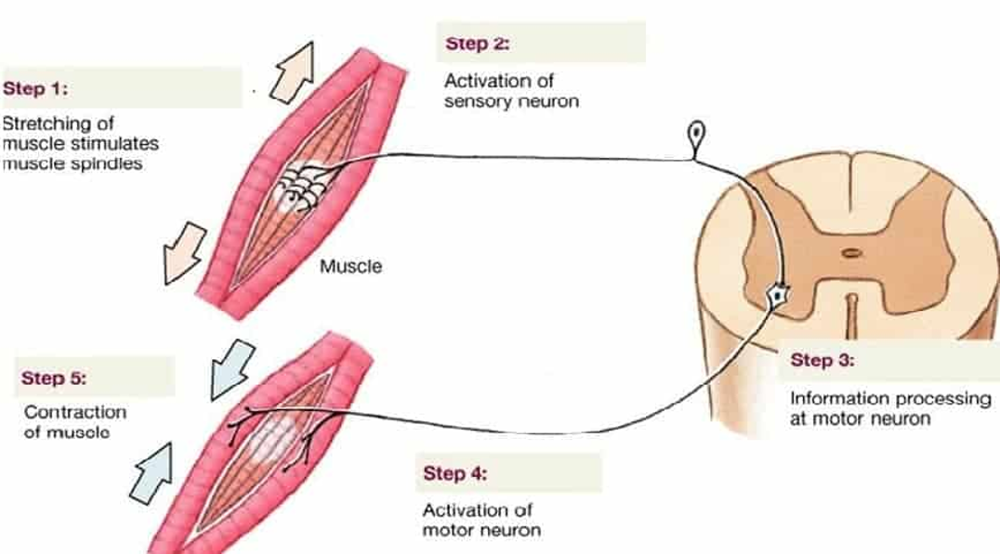
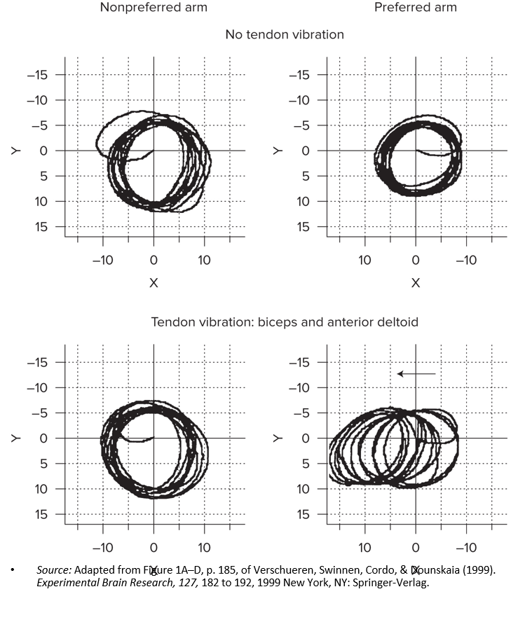

Proprioception — The Position & Movement Sense
Touch told you about the world you contact. In this lesson we study proprioception.
These interactive lessons were built by Dr. Kuznetsov using AI tools, with extensive input from and review by the instructor, who is responsible for their content and accuracy.
A second source of feedback
Lesson 1 built the closed-loop control model: a command goes out, and the comparator checks the actual sensory feedback against what was expected. Lesson 2 examined the first source of that feedback — touch, your contact with the outside world.
This lesson turns inward. Proprioception is the sense that reports the state of your own body: the angle of every joint, the length and tension of every muscle, the position and motion of each limb — continuously, and almost entirely below awareness.
Interestingly, proprioception can also tell you about the properties of objects you manipulate in your hand — their heaviness, their shape, and what you can do with them (their affordances).
We’ll meet the proprioceptors, see the stretch reflex as closed-loop control in miniature, and work through the classic studies that reveal what proprioception does — mostly by taking it away and watching what breaks.
The man who lost his proprioception
At 19, Ian Waterman came down with what seemed like a stomach flu. A rare autoimmune reaction to the infection destroyed the large sensory nerves carrying touch and proprioception from below his neck. His motor nerves were untouched — his muscles worked perfectly.
Yet he collapsed in a heap and could not sit, stand, or move with any control. With his eyes closed he had no idea where his arms and legs were. The muscles worked; the feedback telling the brain what they were doing was gone.
Watch on YouTube (opens in a new tab)
Over years, Ian taught himself to move again — but only by watching every movement and consciously using vision to control it. Raising an arm in a dark room, or if he sneezes and loses sight of his limbs, remains impossible. Every ordinary action became effortful mental work.
What sense could be so essential that losing it — while the muscles still work — leaves someone unable to move? That sense is proprioception.
Ian’s story is told in full in a well-known medical case-study book: Cole, J. (1995). Pride and a Daily Marathon. MIT Press. See also: “Movement without touch: the life of Ian Waterman,” OUPblog.
Get in touch with your body
Before we go into the weeds on proprioception, try the thing Ian Waterman cannot do. Let’s do these and really tune in to how you perceive your body:
- 1Close your eyes and touch the tip of your nose with the index finger of each hand, one hand at a time.
- 2Keep your eyes closed and “draw” a circle, a triangle, and a square with one index finger on the palm of your opposite hand. In your mind’s eye, can you both feel and picture each shape?
- 3With your eyes closed, take your phone in your hand and wield it — move it around a little. Can you tell how heavy it is? Now hold it in the middle versus pinching it at one end — does it feel lighter or heavier?
With your eyes closed, you still knew exactly where your finger, nose, and palm were. Where was that information coming from? Jot down a sentence or two.
Saved only in your browser, just for you. Jot something down, then continue.
Adapted from the in-person Station 4 proprioception activity (“Get in touch with your body through proprioceptive feedback”).
What proprioception is
Proprioception is the sensation and perception of the position and movement of your limbs, trunk, and head — your sense of your own body in space.
Proprioception is a broad term that includes kinesthesia — the sense of body movement (Quintero et al., 2026).
It delivers four kinds of information to the central nervous system (Proske & Gandevia, 2009). Flip each card to see what it means.
That “touch your nose, eyes closed” demo you just did ran almost entirely on proprioception. It works so seamlessly that most people don’t know it exists — until, like Ian Waterman, they lose it.
Quintero, J. D., et al. (2026). Clarifying Proprioceptive Training: A Narrative Review. Journal of Functional Morphology and Kinesiology, 11. https://doi.org/10.3390/jfmk11030279
Haptic perception: feeling the world by moving
Proprioception rarely works alone. Combined with cutaneous (touch) feedback, it lets you actively perceive the world through movement — a process called haptic perception (Lederman & Klatzky, 2009).
This is the ex-proprioceptive function you met in Lesson 1: perceiving the body in relation to the environment. Flip each card for an everyday example:
Perception isn’t just passive reception — we actively move to perceive. Touch tells you about contact; proprioception tells you about the forces and positions behind that contact; together they let you read the world through action.
Lederman, S., & Klatzky, R. (2009). Haptic perception: A tutorial. Attention, Perception, & Psychophysics, 71, 1439–1459. https://doi.org/10.3758/app.71.7.1439
The proprioceptors
Proprioceptive signals begin in specialized sensory neurons — proprioceptors — embedded in muscles, tendons, ligaments, joints, and fascia. There are four main types. The diagram below shows a muscle attaching to bone via its tendon, with each receptor in its typical location.
Click each labeled receptor in the diagram — its details appear in the panel above the image. Open all four to continue.
Opened 0 of 4 proprioceptors.
Muscle spindles
Muscle spindles are the workhorse of proprioception. They have an elongated shape (up to about 1 cm) with a thicker area in the middle — which is what makes them look like a “spindle.”
Each spindle contains specialized muscle fibers, intrafusal fibers, oriented parallel to the force-producing extrafusal fibers. When the extrafusal fibers change length, the intrafusal fibers are stretched or shortened accordingly. The sensory endings inside the spindle are sensitive to both muscle length and the velocity of muscle stretch.
Type Ia axons wrap the spindle’s middle and carry its length-and-velocity signal to the central nervous system — and, as the next screen shows, straight into the spinal cord to drive the stretch reflex.
The stretch reflex
The muscle spindle’s most famous job is the stretch reflex — and it is a clean, tiny example of the closed-loop control from Lesson 1, running entirely in the spinal cord.

- •Monosynaptic — just one synapse between the incoming sensory signal and the outgoing motor command, which is why it’s so fast (latency ~30–50 ms, termed M1).
- •It’s involuntary closed-loop control: when an external force (a mallet, a stumble) lengthens the muscle, the reflex fires to pull it back toward its original length.
- •The knee-jerk is the textbook case — Sherrington first traced it to the muscle spindles.
Set-point (muscle length) → sensor (spindle) → error detected → correction issued. The comparator loop you learned as a whole-brain idea also runs, in miniature, across a single spinal synapse.
Golgi tendon organs & articular joint receptors
Spindles track muscle length. Two other proprioceptors fill in what spindles miss — force and joint position.
Flip each card for the details.
Spindles → length & velocity. GTOs → force. Articular joint receptors → joint angle, especially at the extremes. More broadly, proprioception integrates multi-tissue mechanoreceptive signals — from muscle spindles, Golgi tendon organs, joint capsules, ligaments, and cutaneous afferents — into one coherent picture of the body’s mechanical state (Ribeiro & Oliveira, 2011).
Ribeiro, F., & Oliveira, J. (2011). Factors Influencing Proprioception: What do They Reveal? https://doi.org/10.5772/20335
Studying a sense you can’t see
You can’t point to proprioception the way you can show someone a sound or a light. So researchers study it indirectly — by removing it, distorting it, or finding people who have lost it, then watching what happens to movement. Flip each card to see how.
Surgical deafferentation
The most direct way to ask what proprioception does is to take it away entirely and see what movement is left. In a classic line of animal research from the 1960s and 70s, that is exactly what was done — and the findings reshaped how we think about motor control and rehabilitation.
Deafferentation removes proprioceptive feedback by cutting the dorsal (sensory) nerve root — the afferent pathway — while leaving the motor pathway intact. The limb can still be driven; the brain just stops hearing back from it.
Flip for the main result of their work.
For your PT/OT practice, this is the origin story of constraint-induced therapy: force use of an affected limb, and the nervous system reorganizes around the available feedback (Taub, 2012).
Taub, E. (2012). The behavior-analytic origins of constraint-induced movement therapy: an example of behavioral neurorehabilitation. Behavior Analysis, 35(2), 155–178. https://doi.org/10.1007/BF03392276
Reproducing a position — with and without vision
What happens when someone with proprioceptive loss tries to place a limb accurately? Blouin et al. (1993) tested exactly this with a deafferented patient alongside healthy controls.
Predict the result, then flip:
Blouin, J., et al. (1993). Reference systems for coding spatial information in normal subjects and a deafferented patient. Experimental Brain Research, 93, 324–331.
Tendon vibration
Instead of removing proprioception, you can fool it. High-speed vibration applied to a tendon activates the Ia spindle afferents, triggering the tonic vibration reflex and creating a powerful illusion that the muscle is lengthening (Bianconi et al., 1963).
Predict the result, then flip:

Verschueren, S. M. P., Swinnen, S. P., Cordo, P. J., & Dounskaia, N. V. (1999). Experimental Brain Research, 127, 182–192.
Proprioception in postural control
The same vibration trick reveals how much standing balance leans on proprioception from the legs. Vibrate the Achilles tendons of someone standing still, and their sense of “upright” shifts.
- •Increased backward lean: the calf muscles feel as if they’re lengthening (as if the body is tipping forward), so the person leans backward to compensate.
- •Increased postural sway overall (Doumas et al., 2019; Vizirgianakis et al., 2021).
- •Achilles vibration even shifts the perceived vertical — proprioception contributes to the sense of which way is “up” (Barbieri et al., 2008).
The tendon-vibration postural effect is one of the hands-on demonstrations in the in-person lab — a direct way to feel your own balance system being fed false information.
Barbieri, G., et al. (2008). Does proprioception contribute to the sense of verticality? Experimental Brain Research, 185(4), 545–552.
What happens after a joint replacement?
Here’s a puzzle. A total joint replacement physically removes the articular joint receptors — there’s no synovial joint left. If joint receptors were essential for proprioception, people should lose their position sense. They don’t.
Flip for the takeaway.
From Ian Waterman to deafferentation to joint replacement, one theme repeats: proprioception is built from several overlapping sources, and the motor system is remarkably good at reweighting what’s left — which is exactly what rehabilitation exploits.
Barrett, D. S., Cobb, A. G., & Bentley, G. (1991). Joint proprioception in normal, osteoarthritic and replaced knees. Journal of Bone & Joint Surgery (Br), 73(1), 53–56.
Match each proprioceptor to what it detects
Drag each receptor onto what it primarily senses (or tap a receptor, then tap a target). Place all three to continue.
Placed 0 of 3.
What you can now do
- 1Define proprioception and kinesthesia, and name the four qualities they report (direction, location, velocity, effort).
- 2Identify the proprioceptors — muscle spindles, Golgi tendon organs, articular joint receptors, fascial endings — and what each detects.
- 3Explain the stretch reflex as involuntary closed-loop control (monosynaptic, M1 latency ~30–50 ms).
- 4Interpret the classic methods — deafferentation, neuropathy, position reproduction, tendon vibration — and what they reveal.
Lesson 4 — The Vestibular System: the inner-ear organs that sense head motion and gravity, the three vestibular reflexes, and why astronauts have to relearn movement in space.